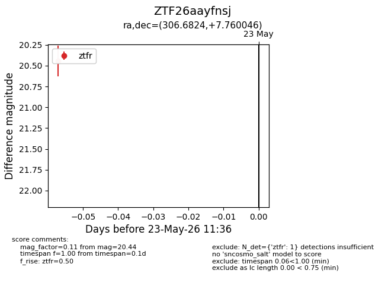
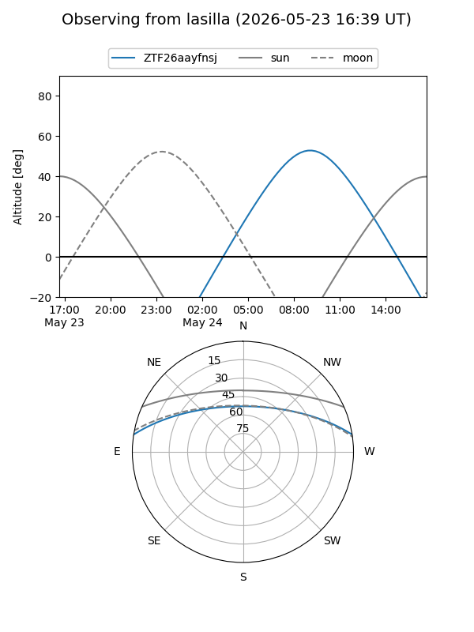
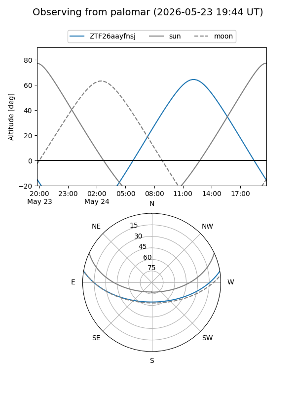

ZTF26aayfnsj
Target ZTF26aayfnsj at 2026-05-23 11:37
Aliases and brokers:
lsst-FINK: link
lsst-Lasair: link
lsst-ALeRCE: link
ztf-FINK: link
ztf-Lasair: link
ztf-ALeRCE: link
alt names
ZTF26aayfnsj (ztf,fink_ztf)
Coordinates:
equatorial (ra, dec) = 306.6824,+7.76005
equatorial (HMS+DMS) = 20:26:43.78,+07:45:36.16
galactic (l, b) = (51.3965,-17.13449)
Flags:
Photometry:
last ztfr=20.44
1 ztfr detections
Lightcurve

Visibility


Additional plots